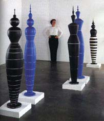

| Roseline Delisle
Article by Penny Smith
Article reprinted with kind permission of Ceramics,
Art & Perception.
My
first encounter with the work of Roseline
Delisle was at the Frank Lloyd Gallery in the Bergamot Station
complex in Santa Monica, LA, where she was one of the artists in
a show entitled Contemporary Ceramics: Nine Artists, held in June,
2000.
Delisle’s work immediately impressed me with its sense of
stylised colour and dizzy movement; its balance and precision; the
obvious skills with which she executes her work; her sense of proportion
and scale; her meticulous attention to detail and her neat problem-solving
solutions concerning minimising the real risk of the next ‘big’
earthquake shaker to her pots.
Born in Rimouski, Québec, in Canada, Delisle came from a
creative and art nurturing family environment, with a mother who
worked in clay as a hobby, and a father who sculpted wood part-time.
One of Delisle’s earliest memories was of the sound of her
father’s rhythmic chipping and watching the fine shavings
curling from his chisels. This she often recalls at her wheel in
her own work rhythms as she concentrates on the fine clay curls
that she turns from her finely-honed pieces.
Influenced by an older brother with an interest in science, Delisle
originally thought her future lay in the fields of physics and chemistry,
but a visit to the nearby art school saw her enrolling at the Institute
of the Applied Arts, Montréal, in 1969. In this old style
art school with a strict curriculum of technical learning, her 40
hours of study a week included a wide range of classes that encouraged
the broad use of materials and techniques. However, it was towards
the ceramics studio that she ultimately gravitated.
Once established at her wheel, she started to explore the precise
thrown forms that have become her trademark, at that time in a coarse
stoneware, the colour and consistency of which thwarted her desire
for the finesse that even then she was seeking to achieve. For Delisle
to attempt to throw finely with a coarse stoneware on a kick wheel
says something for the tenacity and wilfulness of this artist in
her pursuit of perfection, and it wasn’t until a friend introduced
her to the seductive stuff of porcelain that she started to make
progress.
After graduating from college in 1973, Delisle travelled to the
Gaspé Peninsula for an apprenticeship with ceramist, Enid
LeGros. In Cree Indian, Gaspé means ‘edge of the world’
which is exactly where Delisle felt she was. In her early 20s, she
was living and working in a cabin in relative isolation, making
finely-thrown and striped porcelain bowls which she was selling
for meagre profit in Montréal.
She eventually found the isolation and the Québecois winters
too hard to take, and was persuaded by friends to go south and join
them in their studio. Making delicately banded and scratched work
and selling them at small local fairs, she says that these were
still her ‘granola days’. Not profiting enough from
her labours, living frugally, with no electricity and no running
water, she left the studio in 1977, in debt. She joined a group
of men friends who were on their way to Alberta to work as lumberjacks,
not knowing what to expect but desperate enough to try anything
to regain solvency.
Delisle learnt how to use a chainsaw, lumber jacking with her male
fellows. As French Canadians – Delisle spoke no English at
this time – the group was given one of the toughest assignments
with the most basic of camps. However, Delisle’s childhood
experience of family summer house building with her father, saw
her shouldering her chainsaw with the best of them and, despite
her slight frame, she endured sub-zero temperatures to make enough,
in a matter of months, to repay her debts and enable her to move
on.
Yearning for warmer climes, Delisle then decided to travel south,
arriving in California in 1978. At this time, she set up her first
studio in Venice, where she established her reputation by having
a number of small studio sales, and catching the eye of such gallery
directors as Garth Clark. She now lives and works in her current
studio in Santa Monica, with husband, the painter, Bruce Cohen,
and their seven year old daughter, Lili.
Both technical and formal concerns have informed and continue to
inform Delisle’s work. Her signature forms have evolved slowly
over many years as a natural process of working in components on
the wheel. Gaining in confidence and skill, she gradually developed
her techniques; inverting and stacking together pieces as a natural
way to achieve larger scale, and increasing their precariousness
by introducing impossible bases. As in her earlier work, decoration
still comprises banding coloured slips (with a little added gum
to harden the colours during handling in kiln packing) on to the
burnished leather-hard pots while they revolve quickly on the wheel.
This she does by eye with pinpoint accuracy and a steady hand, to
achieve the calculated negative spaces between the coloured stripes.
The fired pots are then polished to a fine sheen then coated with
a light mixture of turpentine and melted bees wax. The turpentine,
when it evaporates, leaves behind a fine film of wax that protects
the finished piece.
For many years, since her college days, her vocabulary of form
and colour has been coaxed patiently from her chosen medium of porcelain.
The nature of the medium itself was such that Delisle was so seduced
by its sensuality during the making process that she lived with
the frustrations of the deformities that resulted from the ensuing
high temperature firings. For 25 years she continued the struggle
trying to make her forms defy high temperature kiln gravity, claiming
her stubbornness was due to her endurance of past Canadian winters.
When scale started to become a major philosophical issue, Delisle
reluctantly decided to give up the battle with the material that
she loved and moved to earthenware in order that her work could
move forwards.
In
the exhibition Colour and Fire: Defining Moments in Studio Ceramics,
1950–2000 at the Los Angeles County Museum and Art, Peter
Voulkos states a similar love affair with clay that Delisle feels;
that of having to "feel it in my fingers. Then it gets into
my body, and the invisible becomes visible – sound, movement,
colour, pattern. All these things are coming from my fingertips
like a dancer, I’ve got to be moving, everything comes out
of movement." However, it is Delisle’s latest forms,
her larger scale works (also included in the same show) that really
start to become ‘like a dancer’.
An illustration of Delisle’s transition into movement can
be seen in the works that represent her in the Colour and Fire show;
two earlier pieces, Quadruple 3 (1990), made in porcelain, and 8=1
(1997), made in earthenware, illustrate her development in recent
times. Looking closely at Quadruple 3, one can’t help noticing
the tiny spiral at the top of its blue, black and white striped
lid section, a reminder of the ‘memory’ that the porcelain
had of its throwing; a tiny, defiant ‘unravelling’ of
the form during firing. Minute as this is, the larger frustrations
that this represents in her efforts to manage her materials and
firing procedures in her pursuit for ever more daring dancing forms,
one can understand the switch to earthenware. Just such an example
stands nearby; 8=1 is more than a metre high on its plinth, the
solid black of its body shimmering dully and in stark contrast to
the immaculate lines of white strips on its plate-like top. As one
moves around the piece, the stripes appear to revolve slightly in
the opposite direction in one’s peripheral vision –
a disturbing and intriguing sensation; as unnerving as a Bridget
Riley painting, but a sensation that Delisle would delight in causing.
Having also just seen in the same day an exhibition of the work
of Charles and Ray Eames where, among the universal classics of
pre-formed plywood furniture, was a gem of a film called Tops. One
of the many films made by the pair, Tops featured children (and
grown ups) spinning an enormous variety of different coloured and
shaped tops that they had collected from around the world, to demonstrate
to students the physics of rotational movement. Seeing these whirling
striped forms, and experiencing the disturbance to my equilibrium
with Delisle’s 8=1, it is hardly surprising that Kristine
McKenna should describe Delisle’s work as "evocative
of stylised harlequin figures that threaten to morph into spinning
tops". 1
A particularly appropriate description, given the pivotal moment
Delisle’s future directions took after seeing Oskar Schlemmer’s
reproduction of the 1922 Triadic Ballet in 1979 at the University
of California at Los Angeles, (UCLA Royce Hall). Schlemmer, one
of the many young artists that Walter Gropius employed in the early
days of the Bauhaus, taught drawing and became director of the Bauhaus
stage in Dessau in 1925. The Triadic Ballet was a major choreographic
work that Schlemmer developed, describing it as a "triadic
(from triad – three) because of the three dancers and the
three parts of its symphonic architectonic composition: the fusion
of the dance, the costumes and the music. The special characteristics
of the ballet are the costumes which are of a coloured, three- dimensional
design, the human figure which is an environment of basic mathematical
shapes, and the corresponding movements of that figure in space."
2 Schlemmer’s fellow colleague at the Bauhaus, Wassily Kandinsky,
also worked on commissions for the theatre. In Kandinsky’s
set designs for Mussorgsky’s music, Pictures at an Exhibition,
the inspiration for the figurines in his drawings came from a similarly
mathematical abstraction of the figure, so obvious these days in
Delisle’s work.
The simple boldness of the Kandinsky’s drawings have a similar
dynamic energy to the drawings pinned up in Delisle’s studio.
Her designs, too, are initially mapped out mathematically, cut and
dissected geometric shapes that are reassembled into strong graphic
profiles. These initial drawings she uses as guides to work out
the actual size and shape of the pieces she is to throw, to calculate
how the piece will finally go together. Later, as a relief to the
strictness required of her making techniques, and as a prelude to
the exacting task of decorating, she will return to the drawings,
re-rendering them in energetic expressions of rapid marks that make
them start to shimmer and move.
As
illustrated by the small sketches of Kandinksky’s figures,
the sense of monumentality has little to do with scale. As examples,
witness the jewellery of Wendy Ramshaw, with her fine turned finger
rings in metal and perspex, striped, stacked, spiked and coned on
their personal stands; or the polyester pleated, hooped Tokyo Vogu
frock of Issey Miyake, or a Brancusi sculpture or Skytower, the
central focus to Sydney’s cityscape. Monumentality has more
to do with understanding the relationships between form and space.
Conscious of these as influences on her work, Delisle has achieved
the extremities of form she has demanded of some of her later works
with their increase in scale, by cunning methods of construction,
matched only with her skills to carry them out. For example, the
narrow waists with flaring skirts; the bulbous ‘hips’
and ‘shoulders’ and the tiny bases of her pots are all
thrown in sections. All are scrupulously manufactured to superfine
tolerances, often decorated inside and underneath as well as on
their outer surfaces. Delisle now assembles her forms both at leather-hard
and at post firing stage, as opposed to letting the porcelain parts
fuse together at high temperature. Her damp cupboard is a morgue
to the spare body parts she has left over from previous work sessions,
these she ‘brings out to play’ with the new parts, using
them as an extension of her drawing process.
So precise are her skills at assembling these new totemic works,
that it is difficult to see where each join occurs. She makes no
secret of the fact that they are in sections, each piece is often
named after the number of parts from which they are made. Octet
2, for example, or Septet 1. Each individual part of the piece is
then threaded on metal rods that feed right through the centre of
each section, finally being secured at the base into their own personalised
wooden pedestals that are weighted with sand. This acts as her earthquake
security system.
Since the arrival of Lili to the family, Delisle has come to recognise
that her explorations of scale have become even more connected to
the figure, but within a family group. She has taken to choreographing
her work together in a conscious array of form, size, shape and
colour.

She is starting to explore more fully the inter-relationship of
these forms to each other within space; to the dynamic gaps that
now occur between each form as the stridency of their decoration
and the crispness of their shapes creates an even greater sense
of discourse. She cites Frank Gehry’s Dancing House or (‘Fred
and Ginger’) in Prague as a good example of how humanistic
architectural structures can actually ‘talk to each other’;
how in this building, Gehry has successfully combined the old with
the radically new in an attempt to launch old social structures
into a brave new millennium.
On her studio walls, there are two drawings of significance. One
is by Lili, a faithful rendering of one of her mother’s works,
but Lili’s has a softer, more fluid profile; the other is
by Delisle herself, of a top heavy, asymmetrical, full-bodied ellipse,
topping an elegant tapering base. Delisle’s possible future
directions then, could best be described through Lili’s recent
observations of passing a pregnant woman in the street. As the young
woman’s well rounded belly in her body-hugging dress came
into profile, Lili announced that here was another of her mother’s
pots. A startling revelation into the asymmetry of the human figure
that Delisle says she is not quite ready to explore. In the meantime,
Delisle’s repertoire is full with her current concerns and
her immediate future looks busy.
References:
- Kristine McKenna, Roseline Delisle catalogue,
produced by Frank Lloyd Gallery, June 5 – July 3, 1999.
- Oskar Schlemmer, ‘The Mathematics of Dance’.
Vivos voco (Leipzig) Vol. 5. August-September 1926.
Penny Smith is a ceramic artist from Hobart, Tasmania.
At the time of writing this article, she was residing in Los Angeles
with her husband, John, who was an Australia Council grant recipient
at the 18th Street Arts Complex, Santa Monica. Photography by Anthony
Cuñha. Penny Smith wishes to thank the Frank Lloyd Gallery
for support in writing this article. Roseline Delisle is represented
by the Frank Lloyd Gallery, Bergamot Station, Santa Monica, California,
USA. Article reprinted with kind permission of Ceramics,
Art & Perception. © Penny
Smith
More Articles
More Artists of the Week
|